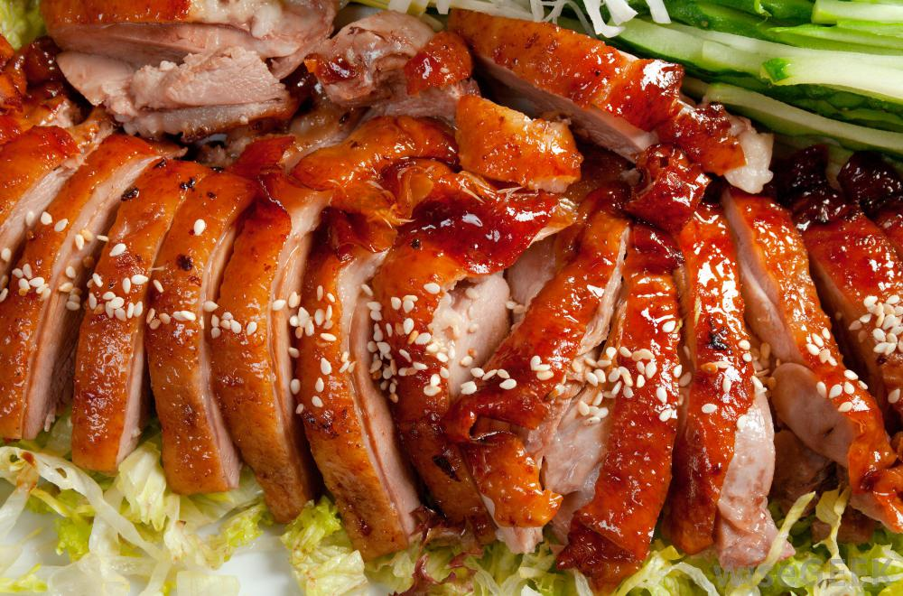
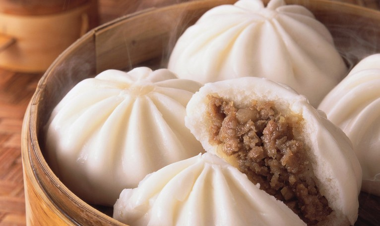
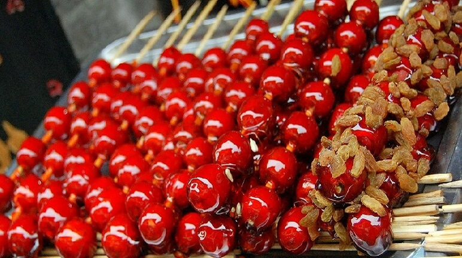

CHINESE FOOD



Peking duck is a dish from Beijing that has been
prepared since the imperial era. The meat is characterized by
its thin, crisp skin, with authentic versions of the dish serving mostly
the skin and little meat, sliced in front
of the diners by the cook.. Ducks bred specially for the dish are slaughtered
after 65 days and seasoned before being roasted in a closed or hung oven. The meat
is eaten with spring onion, cucumber and sweet bean sauce with pancakes rolled around the
fillings. Sometimes pickled radish is also inside, and other
sauces (like hoisin sauce) can be used.
How to cook Peking Duck?
- Fattened ducks are slaughtered, plucked, eviscerated and rinsed thoroughly with water.
Air is pumped under the skin through the neck cavity to separate the skin from the fat.
The duck is then soaked in boiling water for a short while before it is hung up to dry.
- While it is hung, the duck is glazed with a layer of maltose syrup, and the inside is rinsed
once more with water. Having been left to stand for 24 hours, the duck is roasted in an oven
until it turns shiny brown.Besides two traditional methods to prepare Peking Duck, recipes
have been compiled by chefs around the world to produce the dish at home.